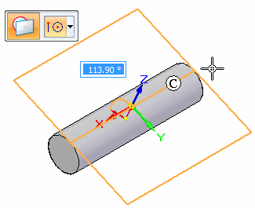
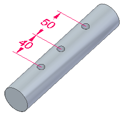

Placing a hole on a cylinder
When placing a hole on a cylinder, press F3 as the cursor moves over the cylinder or click the lock icon. The Tangent plane command activates. You can position tangent plane by dynamically dragging or by entering an angular value, and then press Enter. Once the tangent plane locks, you can drag the hole over the tangent line (C) and the hole locks to the tangent line.

While in the Hole command, you can place dimensions between the holes. You can also dimension the holes after the holes are placed.
